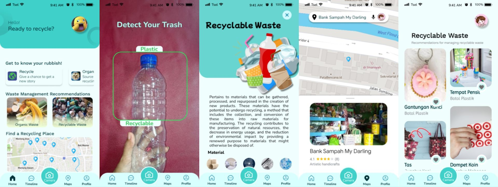
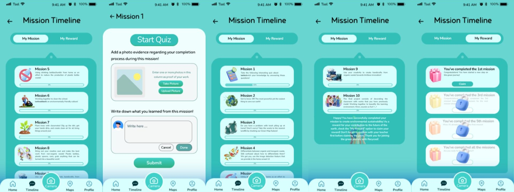

Implementasi Aplikasi Recycool dalam Pendidikan Karakter guna Menyiasati Degradasi Lingkungan di Era Disrupsi Digital
Latar belakang
Penimbunan sampah adalah masalah yang cenderung makin kronis seiring waktu. Jumlah penduduk Indonesia mencapai sekitar 275 juta jiwa, dan dengan asumsi SNI, yaitu 0,5 kg sampah per orang per hari, timbulan nasional mencapai sekitar 137,5 ribu ton per hari, atau sekitar 50 juta ton per tahun. Selain pertambahan penduduk, pola hidup yang makin konsumtif serta perkembangan industri dan teknologi membuat volume, jenis, dan karakter sampah makin beragam (Astawa, 2023).
Masalahnya tidak berhenti pada jumlah. Pengelolaan sampah di Indonesia juga lemah dari sisi dasar hukum, pemilahan oleh masyarakat, kapasitas tempat pembuangan akhir (TPA), dan sistem pengelolaan di TPA (Chaerul dkk., 2007). Di Jakarta, kelima kotanya masuk 10 besar penghasil timbulan sampah tahun 2023, dengan Jakarta Timur di peringkat pertama sebesar 851,6 ribu ton per tahun (SPISN, 2023). Kepadatan penduduk menjadi salah satu penyebabnya, ditambah rendahnya kepedulian masyarakat terhadap dampak sampah.
Berangkat dari argumen bahwa kebiasaan mengelola sampah tidak bisa hanya dibebankan pada infrastruktur. Ia perlu dibentuk sejak dini lewat pendidikan. UU No. 20 Tahun 2003 tentang Sisdiknas menegaskan bahwa pendidikan nasional berakar pada nilai agama, kebudayaan nasional, dan tuntutan perubahan zaman, dan UNESCO menetapkan tiga elemen pembelajaran, yaitu belajar untuk mengetahui, melakukan, dan hidup bersama. Dua elemen pertama menekankan pengetahuan dan keterampilan, sedangkan elemen ketiga menyentuh pembentukan karakter sosial dan lingkungan (Baginda, 2018). Di sisi lain, pendidikan masih kerap menghasilkan ahli di bidang sains yang kurang beretika (Marwiji dkk., 2023). Dari situ muncul pertanyaan penelitian, yakni bagaimana aplikasi berbasis gamifikasi dapat menanamkan karakter peduli lingkungan pada peserta didik di era disrupsi digital?
Data yang digunakan
Project ini tidak mengumpulkan data primer. Bahan yang dipakai terdiri dari statistik persampahan, dokumen kebijakan pendidikan, dan literatur teori. Setiap bahan dipilih karena menopang satu langkah argumen, dari besarnya masalah sampai rancangan solusinya.
| Bahan | Sumber | Peran dalam Analisis |
|---|---|---|
| Jumlah penduduk, asumsi timbulan sampah per orang | BPS (2023); SNI | Menunjukkan skala masalah sampah |
| Peringkat 10 kota penghasil sampah terbanyak 2023 | SPISN (2023); Rasyid (2024) | Menunjukkan Jakarta sebagai wilayah paling terdampak |
| Studi persoalan pengelolaan sampah dan TPA | Chaerul dkk. (2007); Mahyudin (2017); Sholihah dan Hariyanto (2020) | Menjelaskan penyebab pengelolaan sampah yang buruk |
| UU No. 20/2003 (Sisdiknas), tiga elemen UNESCO, Penguatan Pendidikan Karakter (PPK) | Dokumen kebijakan dan Baginda (2018) | Landasan hukum dan konseptual pendidikan karakter |
| Studi karakter peduli lingkungan di sekolah | Ninsih dkk. (2018); Siskayanti dan Chastanti (2022); Ismail (2021) | Dasar penanaman karakter peduli lingkungan sejak usia dini |
| Teori gamifikasi dalam pembelajaran | Dicheva dkk. (2015); Jusuf (2016); Surendeleg dkk. (2014) | Dasar perancangan misi, level, dan hadiah |
Metode
Pertanyaan penelitian ini menuntut jawaban berupa solusi yang dapat diterapkan, sehingga penelitian ini memakai pendekatan perancangan yang bersandar pada kajian pustaka. Dari bahan pada bagian data, sasaran ditetapkan pada pendidikan karakter peduli lingkungan di sekolah, khususnya dimensi olah rasa (estetis) dalam Penguatan Pendidikan Karakter, dengan isi pembelajaran yang mengacu pada tiga elemen UNESCO, yaitu belajar untuk mengetahui, melakukan, dan hidup bersama. Cara penyampaiannya memakai gamifikasi, karena pembelajaran tradisional dinilai kurang efektif dan membosankan (Dicheva dkk., 2015). Gamifikasi diturunkan dengan langkah membangun motivasi intrinsik dan ekstrinsik dari Jusuf (2016), dan setiap langkahnya diubah menjadi satu pertanyaan perancangan yang harus dijawab oleh aplikasi, seperti pada tabel berikut.
| Langkah Gamifikasi (Jusuf, 2016) | Pertanyaan Perancangan |
|---|---|
| Pemberian hadiah saat menyelesaikan tantangan | Kapan dan bagaimana siswa mendapat penghargaan? |
| Perancangan sistem level | Bagaimana tantangan disusun dari yang mudah ke yang sulit? |
| Pengaturan periode waktu tiap tantangan | Berapa lama siswa mengerjakan setiap tahap? |
| Penyelesaian tantangan secara berkelompok | Di tahap mana siswa perlu bekerja sama? |
| Isi tantangan (tiga elemen UNESCO) | Misi apa yang membuat siswa mengetahui, melakukan, dan hidup bersama? |
Misi yang dirancang bersifat nyata dan diverifikasi dengan bukti foto serta cerita singkat. Rancangan akhir kemudian dinilai dengan tiga pemeriksaan, yaitu kesesuaian dengan kriteria ideal gamifikasi, keterpetaan tiap misi pada nilai karakter yang dituju (tanggung jawab, peduli lingkungan, kreatif, kerja sama, dan jujur), serta hambatan implementasi seperti rendahnya partisipasi siswa yang menentukan perlunya uji coba lanjutan.
Rancangan Recycool menyasar dimensi olah rasa (estetis) dalam PPK. PPK sendiri adalah gerakan yang menyelaraskan olah hati (etik), olah rasa (estetis), olah pikir (literasi), dan olahraga. Olah rasa dipilih karena paling dekat dengan menumbuhkan kepedulian lingkungan.
Hasil
Rancangan aplikasi Recycool
Recycool bekerja seperti e-learning sekolah. Setiap siswa menyelesaikan 10 misi berjenjang. Tingkat kesulitannya naik di tiap misi, perkiraan waktu penyelesaian tiap level adalah 14 hari, dan misi berikutnya baru terbuka bila misi sebelumnya sudah dikumpulkan. Misi dapat dikerjakan secara individu maupun kelompok, dan siswa memperoleh hadiah ketika mencapai misi 3, 5, dan 10, yang bentuknya disesuaikan dengan keputusan pihak sekolah. Guru berperan memantau aktivitas siswa agar penerapannya berjalan lancar.

Sepuluh misi Recycool
Misi disusun mengikuti urutan belajar yang wajar, yaitu mengetahui konsep, mempraktikkan pemilahan, mengubah kebiasaan, lalu berkarya dan bekerja sama. Tiga misi pertama membangun pemahaman dan praktik dasar, misi 4 sampai 6 melatih pemilahan dan aksi lingkungan, dan misi 7 sampai 10 mendorong kolaborasi dan kreativitas.
| Misi | Kegiatan | Fokus Pembelajaran |
|---|---|---|
| 1 | Kuis seputar sampah | Konsep dasar, jenis, dampak, dan cara pengelolaan sampah |
| 2 | Pengenalan konsep 3R | Reduce, Reuse, Recycle dalam kehidupan sehari-hari |
| 3 | Pengumpulan sampah di lingkungan sekitar | Aksi nyata, aplikasi mendeteksi sampah dan menyarankan 3R yang tepat |
| 4 | Penyortiran sampah organik dan anorganik | Pemilahan sebelum dibuang, klasifikasi otomatis lewat aplikasi |
| 5 | Kampanye penggunaan botol minum | Pengurangan sampah plastik, dokumentasi dan cerita pengalaman |
| 6 | Kegiatan pembersihan lingkungan | Keterlibatan langsung di lingkungan sekitar |
| 7 | Menanam pohon bersama di sekolah | Penghijauan, peran pohon bagi ekosistem, kerja sama |
| 8 | Membuat kreasi dari sampah organik | Daur ulang dan pemanfaatan kembali bahan organik |
| 9 | Membuat kreasi dari sampah anorganik | Daur ulang dan pemanfaatan kembali bahan anorganik |
| 10 | Mendekorasi lingkungan belajar dengan kreasi siswa | Gotong royong dan suasana belajar yang menyenangkan |

Nilai karakter yang ditanamkan
Rancangan ini tidak berhenti pada pengetahuan tentang sampah. Tiap misi dipetakan pada nilai karakter tertentu, sehingga tujuannya dapat ditelusuri dari aktivitas sampai ke karakter yang diharapkan.
| Nilai Karakter | Bagaimana Ditanamkan | Misi yang Berperan |
|---|---|---|
| Tanggung jawab | Siswa harus menyelesaikan misi yang ada, baik secara individu maupun kelompok | Seluruh misi |
| Peduli lingkungan | Bimbingan bertahap dalam suasana belajar yang mudah dan menyenangkan | Seluruh misi |
| Kreatif | Siswa membuat karya dari sampah di sekitar mereka | Misi 8 dan 9 |
| Kerja sama tim | Misi melibatkan aspek sosial, siswa saling berinteraksi dan berkontribusi | Misi 7 dan 10 |
| Jujur | Siswa melampirkan bukti foto proses dan mengulang materi yang dipelajari | Seluruh misi |
Kesimpulan
Pengelolaan sampah yang buruk menjadi latar belakang degradasi lingkungan yang merugikan, tidak hanya lewat penimbunan, tetapi juga lewat hilangnya hak manusia atas udara bersih. Karena itu, kesadaran peduli lingkungan perlu ditanam sejak usia dini sebagai langkah preventif yang dampaknya baru terasa jangka panjang. Recycool dirancang sebagai penunjang pendidikan karakter peduli lingkungan lewat 10 misi berjenjang yang menerapkan teori gamifikasi untuk memicu motivasi intrinsik dan ekstrinsik siswa, dengan pemetaan jelas pada nilai tanggung jawab, peduli lingkungan, kreativitas, kerja sama, dan kejujuran.
Agar rancangan ini berdampak, dibutuhkan kerja sama pemerintah, pelaku pendidikan, dan peserta didik. Langkah lanjutan yang paling berguna adalah uji coba di satu atau beberapa sekolah dengan pengukuran sebelum dan sesudah, yaitu pengetahuan pemilahan sampah, perilaku siswa, dan tingkat partisipasi per misi, supaya klaim efektivitasnya bisa dibuktikan dengan angka.
← View other projects